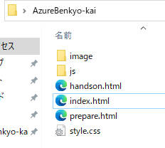
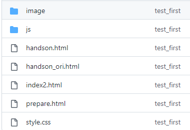

Webサイト作成に必要なもの Azure App ServiceでWebサイトを作成ためには，一般敵にWebサイトを作成するのに必要なファイルだけあれば問題なし htmlファイル css jsファイルなど あとはAzure利用のためのアカウントがあれば以降説明する手順で作成可能。 準備物イメージ このWebサイトを作成するために準備したフォルダイメージ。これだけで作成可能  準備したフォルダをgit hubへアップ git hubを開いてこんな感じになっていればOK↓ 